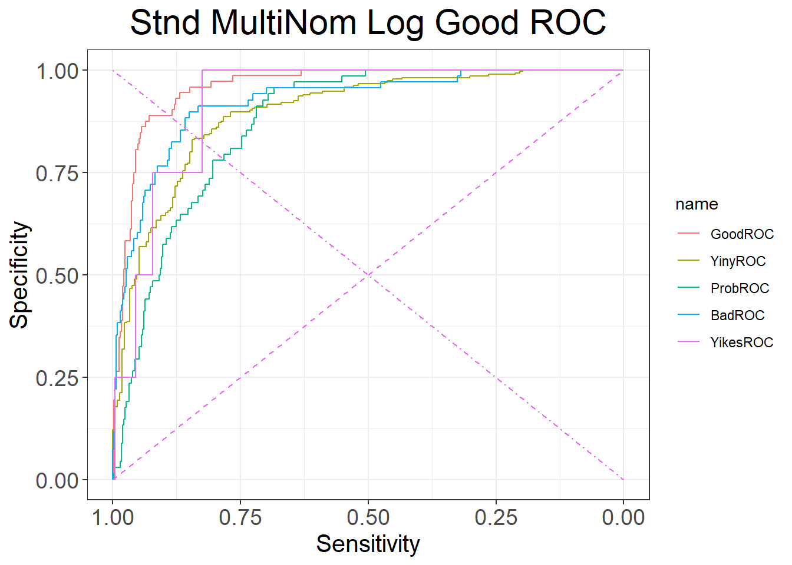
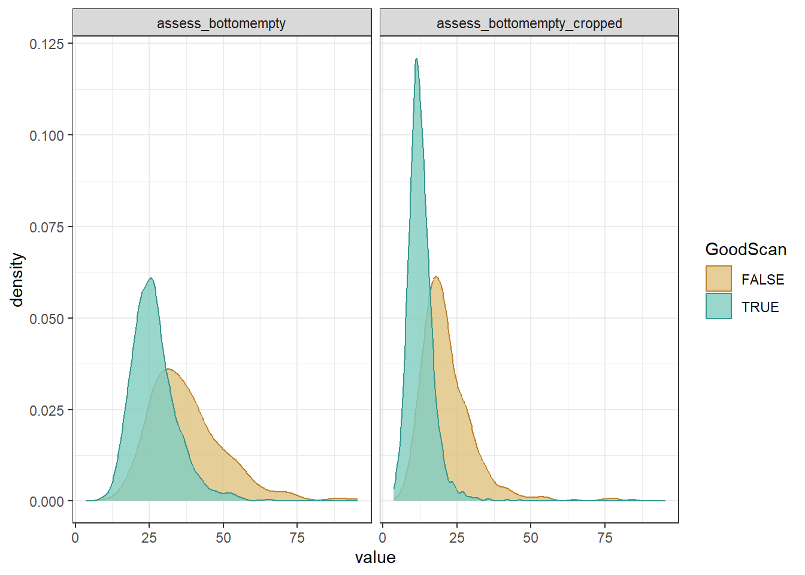
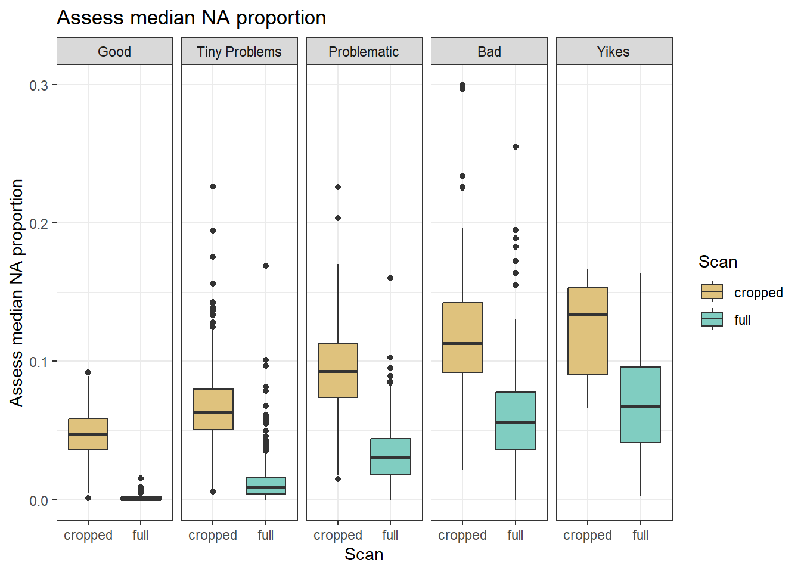
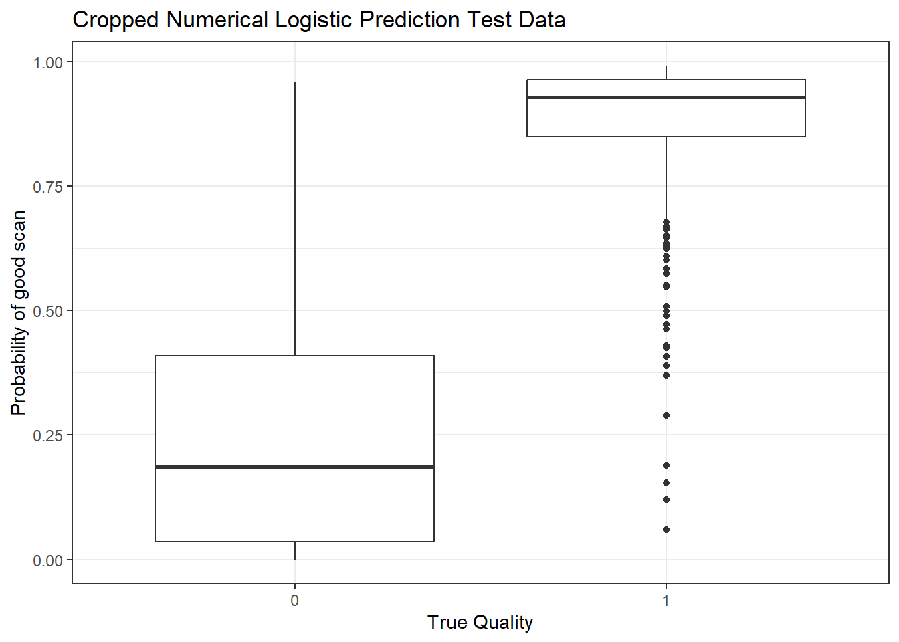

full.data <- read.csv2("../data/std_and_cropped_data_12_20_2022.csv", sep=",")
full.data <- full.data %>% mutate(
Quality = factor(Quality, levels = c("Good", "Tiny Problems", "Problematic", "Bad", "Yikes"), ordered = TRUE),
Problem = factor(Problem, levels = c("Good", "Damage", "Holes", "Feathering", "Rotation-Staging"), ordered = FALSE),
GoodScan = Quality %in% c("Good", "Tiny Problems") %>% factor(),
LAPD_id = sprintf("FAU%3d-B%s-L%d",FAU, Bullet, Land),
# This is the features ran against the full image
assess_percentile_na_proportion = as.numeric(assess_percentile_na_proportion),
assess_col_na = as.numeric(assess_col_na),
extract_na = as.numeric(extract_na),
assess_middle_na_proportion = as.numeric(assess_middle_na_proportion),
assess_rotation = as.numeric(assess_rotation),
assess_bottomempty = as.numeric(assess_bottomempty),
assess_median_na_proportion = as.numeric(assess_median_na_proportion),
# This is the features ran against the cropped image
assess_percentile_na_proportion_cropped = as.numeric(assess_percentile_na_proportion_cropped),
assess_col_na_cropped = as.numeric(assess_col_na_cropped),
extract_na_cropped = as.numeric(extract_na_cropped),
assess_bottomempty_cropped = as.numeric(assess_bottomempty_cropped),
assess_median_na_proportion_cropped = as.numeric(assess_median_na_proportion_cropped)
)
followupScans <- data.frame()Scan Quality Assessor: Model Comparison
Introduction
This document is intended give well commented exact technical details to show the comparison of various models we tested and compared to determine the best candidate for use in a research or real-world environment.
We will investigate the ability of our features to predict the quality of a scan using a variety of methods. It should be noted that given our current classification system Good > Tiny Problems > Problematic > Bad > Yikes, we will consider that any scan worse than Tiny Problems should be re-scanned by the user. However, this is a tool meant to aid a user in deciding and is not to be taken as a sole source of truth.
Models will be broken into two classification types, ordinal and binary. In the ordinal models, we will try to accurately predict which of the five categories a scan falls into. As quality is a subjective rating, we will focus more on being within one step of the assigned rating than going for perfect agree, although perfect agreement would be optimal. In the binary setting, we will group the scans as Good (1) and Bad (0) as binary classifications are often easier. Good (1) scans will be scans currently labelled as Good or Tiny Problems, with Bad (0) scans being Problematic, Bad, and Yikes.
There will also be a comparison of models between using the features calculated against a full image as taken by the scanner, and a cropped image of the scan. The purpose of this is to increase the speed of the quality assurance stage, and to see if removing the ‘noise’ at the sides of the image helps to increase the estimate of quality, as our focus is on the center of the image.
- XXX Is there a more mathy and rigorous reason we chose these models? They are pretty much just my go-tos, and the only ones I know for categorical. Probably need to add references
The models we will train are logistic regressions, and random forests. These models have often proven to be sufficiently explainable for forensic purposes, as well as statistically sound in many environments.
Results
- XXX Interpret the results
| Model | TPR | TNR | F1 Score | Kappa | AUC |
|---|---|---|---|---|---|
| Stnd Multinomial Logistic Regression | 0.9821 | 0.6786 | 0.9283 | 0.7191 | 0.8304 |
| Stnd Binary Logistic Regression | 0.9643 | 0.7714 | 0.9364 | 0.7677 | 0.9533 |
| Stnd Ordinal Random Forest | 0.9643 | 0.7714 | 0.9364 | 0.7677 | 0.8304 |
| Stnd Binary Random Forest | 0.9286 | 0.8286 | 0.9286 | 0.7571 | 0.9477 |
| Crop Multinomial Logistic Regression | 0.9821 | 0.7 | 0.9322 | 0.7375 | 0.8411 |
| Crop Binary Logistic Regression | 0.9554 | 0.7929 | 0.9359 | 0.7707 | 0.9514 |
| Crop Ordinal Random Forest | 0.9554 | 0.8 | 0.9372 | 0.7764 | 0.8777 |
| Crop Binary Random Forest | 0.9375 | 0.8286 | 0.9333 | 0.7709 | 0.9503 |
Data handling and type setting
Feature Analysis
In this investigation, we are going to look at the features calculated against the full image. This investigation will tell us more about the predictive power of each feature, and tell us how different the quality categories are from each other.
- XXX Our results are mostly in graphical form. Should I use some kinda test? Is there a way to front load the results as with models?
Assess Percentile NA Proportion
summary(standard.data$assess_percentile_na_proportion) Min. 1st Qu. Median Mean 3rd Qu. Max.
0.00000 0.00331 0.01088 0.02073 0.02716 0.25525 ggplot(standard.data, aes(x=Quality, y=assess_percentile_na_proportion)) +
geom_boxplot() +
ggtitle("Assess Percentile NA Proportion by Quality")
summary(glm(Quality ~ assess_percentile_na_proportion,
data=standard.data, family="binomial"))Warning: glm.fit: fitted probabilities numerically 0 or 1 occurred
Call:
glm(formula = Quality ~ assess_percentile_na_proportion, family = "binomial",
data = standard.data)
Deviance Residuals:
Min 1Q Median 3Q Max
-4.0868 0.0000 0.0104 0.2550 1.4413
Coefficients:
Estimate Std. Error z value Pr(>|z|)
(Intercept) -0.6017 0.1206 -4.991 6.02e-07 ***
assess_percentile_na_proportion 585.1354 45.1784 12.952 < 2e-16 ***
---
Signif. codes: 0 '***' 0.001 '**' 0.01 '*' 0.05 '.' 0.1 ' ' 1
(Dispersion parameter for binomial family taken to be 1)
Null deviance: 1476.42 on 1849 degrees of freedom
Residual deviance: 782.01 on 1848 degrees of freedom
AIC: 786.01
Number of Fisher Scoring iterations: 10In the boxplot we can see that as Assess Percentile NA Proportion increases, the quality of the image decreases. The IQR of the quality categories has overlap, but the medians are consistently different in the chart. The logistic regression also shows that there is overwhelming evidence, with reservation, for this being a useful feature in explaining the quality.
- XXX What does the warning mean here and how do we address it?
Assess Col NA
summary(standard.data$assess_col_na) Min. 1st Qu. Median Mean 3rd Qu. Max.
0.2573 0.9244 1.0755 1.1654 1.2928 4.3684 ggplot(standard.data, aes(x=Quality, y=assess_col_na)) +
geom_boxplot() +
ggtitle("Assess Col NA by Quality")
summary(glm(Quality ~ assess_col_na,
data=standard.data, family="binomial"))
Call:
glm(formula = Quality ~ assess_col_na, family = "binomial", data = standard.data)
Deviance Residuals:
Min 1Q Median 3Q Max
-2.3488 0.1629 0.4009 0.5954 1.8298
Coefficients:
Estimate Std. Error z value Pr(>|z|)
(Intercept) -2.5752 0.3593 -7.167 7.66e-13 ***
assess_col_na 4.3089 0.3727 11.563 < 2e-16 ***
---
Signif. codes: 0 '***' 0.001 '**' 0.01 '*' 0.05 '.' 0.1 ' ' 1
(Dispersion parameter for binomial family taken to be 1)
Null deviance: 1476.4 on 1849 degrees of freedom
Residual deviance: 1269.5 on 1848 degrees of freedom
AIC: 1273.5
Number of Fisher Scoring iterations: 6In the boxplot we can see that as Assess Col NA increases, the quality of the image decreases. The IQR of the quality categories has overlap, but the medians are consistently different in the chart, with the exception of “Good” and “Tiny Problems” which are very similar. The logistic regression also shows that there is overwhelming evidence for this being a useful feature in explaining the quality.
Extract NA
summary(standard.data$extract_na) Min. 1st Qu. Median Mean 3rd Qu. Max.
3.667 12.797 15.082 15.915 18.303 48.454 ggplot(standard.data, aes(x=Quality, y=extract_na)) +
geom_boxplot() +
ggtitle("Extract NA by Quality")
summary(glm(Quality ~ extract_na,
data=standard.data, family="binomial"))
Call:
glm(formula = Quality ~ extract_na, family = "binomial", data = standard.data)
Deviance Residuals:
Min 1Q Median 3Q Max
-2.6889 0.1483 0.3688 0.5775 1.9821
Coefficients:
Estimate Std. Error z value Pr(>|z|)
(Intercept) -3.09877 0.36353 -8.524 <2e-16 ***
extract_na 0.35060 0.02753 12.736 <2e-16 ***
---
Signif. codes: 0 '***' 0.001 '**' 0.01 '*' 0.05 '.' 0.1 ' ' 1
(Dispersion parameter for binomial family taken to be 1)
Null deviance: 1476.4 on 1849 degrees of freedom
Residual deviance: 1226.7 on 1848 degrees of freedom
AIC: 1230.7
Number of Fisher Scoring iterations: 6In the boxplot we can see that as Extract NA increases, the quality of the image decreases. The IQR of the quality categories has overlap, but the medians are consistently different in the chart. The logistic regression also shows that there is overwhelming evidence for this being a useful feature in explaining the quality.
Assess Middle NA Proportion
summary(standard.data$assess_middle_na_proportion) Min. 1st Qu. Median Mean 3rd Qu. Max.
0.0002776 0.0221251 0.0392280 0.0517308 0.0688228 0.3851669 ggplot(standard.data, aes(x=Quality, y=assess_middle_na_proportion)) +
geom_boxplot() +
ggtitle("Assess Middle NA Proportion by Quality")
summary(glm(Quality ~ assess_middle_na_proportion,
data=standard.data, family="binomial"))
Call:
glm(formula = Quality ~ assess_middle_na_proportion, family = "binomial",
data = standard.data)
Deviance Residuals:
Min 1Q Median 3Q Max
-2.72629 0.03616 0.24091 0.58568 1.34175
Coefficients:
Estimate Std. Error z value Pr(>|z|)
(Intercept) -0.4164 0.1454 -2.864 0.00419 **
assess_middle_na_proportion 73.9873 5.7409 12.888 < 2e-16 ***
---
Signif. codes: 0 '***' 0.001 '**' 0.01 '*' 0.05 '.' 0.1 ' ' 1
(Dispersion parameter for binomial family taken to be 1)
Null deviance: 1476.4 on 1849 degrees of freedom
Residual deviance: 1115.6 on 1848 degrees of freedom
AIC: 1119.6
Number of Fisher Scoring iterations: 7In the boxplot we can see that as Extract NA increases, the quality of the image decreases. The IQR of the quality categories has overlap, but the medians are consistently different in the chart. The logistic regression also shows that there is overwhelming evidence for this being a useful feature in explaining the quality.
Assess Rotation
summary(standard.data$assess_rotation) Min. 1st Qu. Median Mean 3rd Qu. Max.
0.0000 0.3143 0.6904 1.0279 1.4601 4.9878 ggplot(standard.data, aes(x=Quality, y=assess_rotation)) +
geom_boxplot() +
ggtitle("Assess Rotation by Quality")
summary(glm(Quality ~ assess_rotation,
data=standard.data, family="binomial"))
Call:
glm(formula = Quality ~ assess_rotation, family = "binomial",
data = standard.data)
Deviance Residuals:
Min 1Q Median 3Q Max
-2.0678 0.5270 0.5443 0.5507 0.5555
Coefficients:
Estimate Std. Error z value Pr(>|z|)
(Intercept) 1.79066 0.09775 18.319 <2e-16 ***
assess_rotation 0.05131 0.07105 0.722 0.47
---
Signif. codes: 0 '***' 0.001 '**' 0.01 '*' 0.05 '.' 0.1 ' ' 1
(Dispersion parameter for binomial family taken to be 1)
Null deviance: 1476.4 on 1849 degrees of freedom
Residual deviance: 1475.9 on 1848 degrees of freedom
AIC: 1479.9
Number of Fisher Scoring iterations: 4In the boxplot, we see that there is no significant visual difference in median or IQR of Assess Rotation when grouped by Quality. The logistic regression shows no evidence that this feature can help explain the quality of an image. This feature was primarily intended for use in predicting a particular problem that occurs in scans.
Assess Bottomempty
summary(standard.data$assess_bottomempty) Min. 1st Qu. Median Mean 3rd Qu. Max.
8.516 22.669 27.540 29.903 34.634 95.394 ggplot(standard.data, aes(x=Quality, y=assess_bottomempty)) +
geom_boxplot() +
ggtitle("Assess Bottomempty by Quality")
summary(glm(Quality ~ assess_bottomempty,
data=standard.data, family="binomial"))
Call:
glm(formula = Quality ~ assess_bottomempty, family = "binomial",
data = standard.data)
Deviance Residuals:
Min 1Q Median 3Q Max
-2.4871 0.2807 0.4750 0.6070 1.0997
Coefficients:
Estimate Std. Error z value Pr(>|z|)
(Intercept) -0.577479 0.258462 -2.234 0.0255 *
assess_bottomempty 0.089585 0.009999 8.960 <2e-16 ***
---
Signif. codes: 0 '***' 0.001 '**' 0.01 '*' 0.05 '.' 0.1 ' ' 1
(Dispersion parameter for binomial family taken to be 1)
Null deviance: 1476.4 on 1849 degrees of freedom
Residual deviance: 1368.4 on 1848 degrees of freedom
AIC: 1372.4
Number of Fisher Scoring iterations: 5In the boxplot we can see that as Assess Bottomempty increases, the quality of the image decreases. The IQR of the quality categories has overlap, but the medians are consistently different in the chart. There is an observation of note that the Yikes category has a particularly large IQR. The logistic regression also shows that there is overwhelming evidence for this being a useful feature in explaining the quality.
Assess Median NA Proportion
summary(standard.data$assess_median_na_proportion) Min. 1st Qu. Median Mean 3rd Qu. Max.
0.00000 0.00331 0.01088 0.02073 0.02716 0.25525 ggplot(standard.data, aes(x=Quality, y=assess_median_na_proportion)) +
geom_boxplot() +
ggtitle("Assess Median NA Proportion by Quality")
summary(glm(Quality ~ assess_median_na_proportion,
data=standard.data, family="binomial"))Warning: glm.fit: fitted probabilities numerically 0 or 1 occurred
Call:
glm(formula = Quality ~ assess_median_na_proportion, family = "binomial",
data = standard.data)
Deviance Residuals:
Min 1Q Median 3Q Max
-4.0868 0.0000 0.0104 0.2550 1.4413
Coefficients:
Estimate Std. Error z value Pr(>|z|)
(Intercept) -0.6017 0.1206 -4.991 6.02e-07 ***
assess_median_na_proportion 585.1354 45.1784 12.952 < 2e-16 ***
---
Signif. codes: 0 '***' 0.001 '**' 0.01 '*' 0.05 '.' 0.1 ' ' 1
(Dispersion parameter for binomial family taken to be 1)
Null deviance: 1476.42 on 1849 degrees of freedom
Residual deviance: 782.01 on 1848 degrees of freedom
AIC: 786.01
Number of Fisher Scoring iterations: 10In the boxplot we can see that as Assess Median NA Proportion increases, the quality of the image decreases. The IQR of the quality categories has overlap, but the medians are consistently different in the chart. The “Bad” and “Yikes” categories have very similar IQR and Medians. The logistic regression also shows that there is overwhelming evidence, with reservation, for this being a useful feature in explaining the quality.
Cross Correlations
- XXX include https://heike.github.io/ggpcp/
correlations <- cor(full.data[,6:12])
corrplot(correlations, method = "shade")
pairs(full.data[,6:12], pch=19, lower.panel=NULL)There is significant correlation between most of the variables except assess rotation.
Standard Model Analysis
XXX Need ROC curves, add AUC to the presented metrics, distribution of the predictions
| Model | TPR | TNR | F1 Score | Kappa | AUC |
|---|---|---|---|---|---|
| Stnd Multinomial Logistic Regression | 0.9821 | 0.6786 | 0.9283 | 0.7191 | 0.8304 |
| Stnd Binary Logistic Regression | 0.9643 | 0.7714 | 0.9364 | 0.7677 | 0.9533 |
| Stnd Ordinal Random Forest | 0.9643 | 0.7714 | 0.9364 | 0.7677 | 0.8304 |
| Stnd Binary Random Forest | 0.9286 | 0.8286 | 0.9286 | 0.7571 | 0.9477 |
Metric Function that provides our results:
# Function intended to standardize outputs a bit better
numerical.Metrics <- function(test, modelName) {
metrics <- confusionMatrix(factor(round(test$num.predictions), levels = c(0, 1)),
test$num.Quality, mode="everything", positive = "1")
print(metrics)
#Get the AUC
metricROC <- roc(test$num.Quality ~ test$num.predictions)
metricAUC <- auc(metricROC)
#returns c(modelName, TPR, TNR, F1, Kappa)
return(c(modelName, round(metrics$byClass[1], 4), round(metrics$byClass[2], 4),
round(metrics$byClass[7], 4), round(metrics$overall[2], 4), round(metricAUC, 4)))
}Creation of the training and test data.
sample <- sample(c(TRUE, FALSE), nrow(standard.data), replace=TRUE, prob=c(0.75,0.25))
full.data$sample <- sample
full.data$set <- "Train"
full.data$set[full.data$sample == FALSE] <- "Test"
full.data$set = factor(full.data$set, levels=c("Train", "Test"))
full.data$followup <- FALSE
full.data$num.Quality <- 0
full.data$num.Quality[full.data$Quality == "Good"] <- 1
full.data$num.Quality[full.data$Quality == "Tiny Problems"] <- 1
full.data$num.Quality <- factor(full.data$num.Quality, levels = c(0, 1))
train <- full.data[sample, ]
test <- full.data[!sample, ]ggplot(full.data) + geom_bar(aes(x=Quality, fill=Problem)) + facet_grid(~set)ggplot(full.data) + geom_bar(aes(x=num.Quality, fill=Problem)) + facet_grid(~set)
XXX captions: Formula, Description, Inference
model.metrics.all = data.frame(matrix(ncol=6))
colnames(model.metrics.all) <- c("Model", "TPR", "TNR", "F1", "Kappa", "AUC")Standard Multi-Nomial Logistic Regression
The assumptions of the multinomial logisitic regression are: - Nominal dependent variable: Not met - No multi-colinearity: - Linear relationship: - No outlier or high influence points:
train.mutli = train
train.mutli$Quality <- factor(train.mutli$Quality, levels=c("Good", "Tiny Problems", "Problematic", "Bad", "Yikes"), ordered = FALSE)
train.mutli$Quality <- relevel(train.mutli$Quality, ref = "Good")
# Unordered multinomial model
multi.model <- multinom(Quality ~ assess_percentile_na_proportion + assess_col_na +
extract_na + assess_middle_na_proportion + assess_bottomempty +
assess_median_na_proportion, data = train.mutli)# weights: 40 (28 variable)
initial value 2211.367692
iter 10 value 1492.051628
iter 20 value 1184.473639
iter 30 value 1076.098008
iter 40 value 1010.892215
iter 50 value 997.593885
iter 60 value 989.880545
iter 70 value 988.354039
iter 80 value 984.631384
iter 90 value 983.791277
iter 100 value 982.668007
final value 982.668007
stopped after 100 iterationssummary(multi.model)Call:
multinom(formula = Quality ~ assess_percentile_na_proportion +
assess_col_na + extract_na + assess_middle_na_proportion +
assess_bottomempty + assess_median_na_proportion, data = train.mutli)
Coefficients:
(Intercept) assess_percentile_na_proportion assess_col_na
Tiny Problems 3.0859266 137.0631 2.765235
Problematic -0.7128178 145.3500 5.011016
Bad -2.9072182 159.5495 5.392954
Yikes -8.6268924 161.5927 7.846236
extract_na assess_middle_na_proportion assess_bottomempty
Tiny Problems 0.06904753 159.6285 -0.4114700
Problematic 0.06577464 203.8588 -0.5032123
Bad 0.07342551 206.1403 -0.5037006
Yikes -0.02117973 192.8034 -0.4524735
assess_median_na_proportion
Tiny Problems 137.0631
Problematic 145.3500
Bad 159.5495
Yikes 161.5927
Std. Errors:
(Intercept) assess_percentile_na_proportion assess_col_na
Tiny Problems 0.6807013 3.766134 1.007894
Problematic 0.8774300 2.931461 1.217515
Bad 1.0121794 2.855052 1.299274
Yikes 1.6181734 3.439781 1.605986
extract_na assess_middle_na_proportion assess_bottomempty
Tiny Problems 0.07175698 6.982568 0.03082904
Problematic 0.08958740 6.116176 0.03307352
Bad 0.09939011 7.440296 0.03596081
Yikes 0.16352461 2.076766 0.04968974
assess_median_na_proportion
Tiny Problems 3.766134
Problematic 2.931461
Bad 2.855052
Yikes 3.439781
Residual Deviance: 1965.336
AIC: 2013.336 test$Predictions <- predict(multi.model, test)To help compare these models, we will introduce a compression concept. Just as before, all scans will be divided into Good, which includes Good and Tiny Problems. Bad will include all other categories.
test$num.predictions = 0
test$num.predictions[test$Predictions == "Good"] = 1
test$num.predictions[test$Predictions == "Tiny Problems"] = 1
StndMultiLog <- roc(test$num.Quality ~ test$num.predictions)Setting levels: control = 0, case = 1Setting direction: controls < casesmodel.metrics.all <- rbind(model.metrics.all, numerical.Metrics(test, "Stnd Multi Log Reg"))Confusion Matrix and Statistics
Reference
Prediction 0 1
0 95 6
1 45 330
Accuracy : 0.8929
95% CI : (0.8615, 0.9192)
No Information Rate : 0.7059
P-Value [Acc > NIR] : < 2.2e-16
Kappa : 0.7191
Mcnemar's Test P-Value : 1.032e-07
Sensitivity : 0.9821
Specificity : 0.6786
Pos Pred Value : 0.8800
Neg Pred Value : 0.9406
Precision : 0.8800
Recall : 0.9821
F1 : 0.9283
Prevalence : 0.7059
Detection Rate : 0.6933
Detection Prevalence : 0.7878
Balanced Accuracy : 0.8304
'Positive' Class : 1
Setting levels: control = 0, case = 1
Setting direction: controls < casesdt <- table(test$Quality, test$Predictions)
dframe <- as.data.frame(dt) %>% mutate(
Var1 = factor(Var1, levels=levels(test$Quality)),
Var2 = factor(Var2, levels=levels(test$Quality)),
type= Var1==Var2
)
dframe %>% filter(Freq>0) %>% ggplot(aes(x = Var1, y = Var2, size=sqrt(Freq))) + geom_point(aes(colour = type)) +
geom_vline(xintercept=2.5, colour = "grey70") +
geom_hline(yintercept=2.5, colour="grey70") + xlab("Which one is that?")XXX barcharts of predicted scans Quality for all models
Standard Binary regression
- (Good/Tiny = 1, Problematic/Bad/Yikes = 0)
num.logit.model <- glm(num.Quality ~ assess_percentile_na_proportion + assess_col_na +
extract_na + assess_middle_na_proportion + assess_bottomempty +
assess_median_na_proportion,
data=train, family="binomial")
summary(num.logit.model)
Call:
glm(formula = num.Quality ~ assess_percentile_na_proportion +
assess_col_na + extract_na + assess_middle_na_proportion +
assess_bottomempty + assess_median_na_proportion, family = "binomial",
data = train)
Deviance Residuals:
Min 1Q Median 3Q Max
-2.7411 -0.0980 0.3127 0.4743 4.8218
Coefficients: (1 not defined because of singularities)
Estimate Std. Error z value Pr(>|z|)
(Intercept) 3.95133 0.64726 6.105 1.03e-09 ***
assess_percentile_na_proportion -30.38695 10.31097 -2.947 0.003208 **
assess_col_na -2.20329 0.67563 -3.261 0.001110 **
extract_na -0.01020 0.05424 -0.188 0.850828
assess_middle_na_proportion -49.51457 11.13473 -4.447 8.71e-06 ***
assess_bottomempty 0.10088 0.02898 3.481 0.000499 ***
assess_median_na_proportion NA NA NA NA
---
Signif. codes: 0 '***' 0.001 '**' 0.01 '*' 0.05 '.' 0.1 ' ' 1
(Dispersion parameter for binomial family taken to be 1)
Null deviance: 1653.89 on 1373 degrees of freedom
Residual deviance: 890.62 on 1368 degrees of freedom
AIC: 902.62
Number of Fisher Scoring iterations: 6test$num.predictions <- predict(num.logit.model, test, type="response")Warning in predict.lm(object, newdata, se.fit, scale = 1, type = if (type == :
prediction from a rank-deficient fit may be misleadingStndBinLog <- roc(test$num.Quality ~ test$num.predictions)Setting levels: control = 0, case = 1Setting direction: controls < cases# XXX Figure out followup scans
test[test$num.predictions < 0.5 & test$num.Quality == 1, ]$followup = TRUE
test[test$num.predictions > 0.75 & test$num.Quality == 0, ]$followup = TRUE
ggplot(test, aes(x=num.Quality, y=num.predictions)) +
geom_boxplot() +
xlab("True Quality") +
ylab("Probability of good scan") +
ggtitle("Numerical Logistic Prediction Test Data")
ggplot(test, aes(x=num.Quality, y=num.predictions, color=followup)) +
geom_jitter() +
scale_colour_manual(values=c("grey50", "darkorange"))The boxplot shows a general picture of the results of the model. There is a significant number of misclassified scans. Using a typical 0.5 rounding we get the confusion matrix:
model.metrics.all <- rbind(model.metrics.all, numerical.Metrics(test, "Stnd Binary Log Reg"))Confusion Matrix and Statistics
Reference
Prediction 0 1
0 108 12
1 32 324
Accuracy : 0.9076
95% CI : (0.8779, 0.932)
No Information Rate : 0.7059
P-Value [Acc > NIR] : < 2.2e-16
Kappa : 0.7677
Mcnemar's Test P-Value : 0.004179
Sensitivity : 0.9643
Specificity : 0.7714
Pos Pred Value : 0.9101
Neg Pred Value : 0.9000
Precision : 0.9101
Recall : 0.9643
F1 : 0.9364
Prevalence : 0.7059
Detection Rate : 0.6807
Detection Prevalence : 0.7479
Balanced Accuracy : 0.8679
'Positive' Class : 1
Setting levels: control = 0, case = 1Setting direction: controls < casesStandard Ordinal random forest
XXX is this an ordinal random forest or just a categorical one?
ord.forest.model <- randomForest(Quality ~ assess_percentile_na_proportion + assess_col_na +
extract_na + assess_middle_na_proportion + assess_bottomempty +
assess_median_na_proportion, data = train,
importance = TRUE)
test$Prediction <- predict(ord.forest.model, test)To help compare these models, we once again use the previous compression metrics.
test$num.predictions = 0
test$num.predictions[test$Predictions == "Good"] = 1
test$num.predictions[test$Predictions == "Tiny Problems"] = 1
StndOrdFor <- roc(test$num.Quality ~ test$num.predictions)Setting levels: control = 0, case = 1Setting direction: controls < casesmodel.metrics.all <- rbind(model.metrics.all, numerical.Metrics(test, "Stnd Ord Rand For"))Confusion Matrix and Statistics
Reference
Prediction 0 1
0 95 6
1 45 330
Accuracy : 0.8929
95% CI : (0.8615, 0.9192)
No Information Rate : 0.7059
P-Value [Acc > NIR] : < 2.2e-16
Kappa : 0.7191
Mcnemar's Test P-Value : 1.032e-07
Sensitivity : 0.9821
Specificity : 0.6786
Pos Pred Value : 0.8800
Neg Pred Value : 0.9406
Precision : 0.8800
Recall : 0.9821
F1 : 0.9283
Prevalence : 0.7059
Detection Rate : 0.6933
Detection Prevalence : 0.7878
Balanced Accuracy : 0.8304
'Positive' Class : 1
Setting levels: control = 0, case = 1
Setting direction: controls < casesStandard Numerical Random Forest
- (Good/Tiny = 1, Problematic/Bad/Yikes = 0)
- (Good = 1, Yikes = 0, drop others)
num.RF.model <- randomForest(num.Quality ~ assess_percentile_na_proportion + assess_col_na +
extract_na + assess_middle_na_proportion + assess_bottomempty +
assess_median_na_proportion, data = train,
importance = TRUE)
test$num.predictions <- predict(num.RF.model, test, type="prob")[,2]
StndNumFor <- roc(test$num.Quality ~ test$num.predictions)Setting levels: control = 0, case = 1Setting direction: controls < casestest[test$num.predictions < 0.5 & test$num.Quality == 1, ]$followup = TRUE
test[test$num.predictions > 0.75 & test$num.Quality == 0, ]$followup = TRUE
ggplot(test, aes(x=num.Quality, y=num.predictions)) +
geom_boxplot() +
xlab("True Quality") +
ylab("Probability of good scan") +
ggtitle("Numerical Logistic Prediction Test Data")
ggplot(test, aes(x=num.Quality, y=num.predictions, color=followup)) +
geom_jitter() +
scale_colour_manual(values=c("grey50", "darkorange"))
The boxplot shows a general picture of the results of the model. There is a significant number of misclassified scans. Using a typical 0.5 rounding we get the confusion matrix:
model.metrics.all <- rbind(model.metrics.all, numerical.Metrics(test, "Stnd Binary Rand For"))Confusion Matrix and Statistics
Reference
Prediction 0 1
0 116 24
1 24 312
Accuracy : 0.8992
95% CI : (0.8685, 0.9247)
No Information Rate : 0.7059
P-Value [Acc > NIR] : <2e-16
Kappa : 0.7571
Mcnemar's Test P-Value : 1
Sensitivity : 0.9286
Specificity : 0.8286
Pos Pred Value : 0.9286
Neg Pred Value : 0.8286
Precision : 0.9286
Recall : 0.9286
F1 : 0.9286
Prevalence : 0.7059
Detection Rate : 0.6555
Detection Prevalence : 0.7059
Balanced Accuracy : 0.8786
'Positive' Class : 1
Setting levels: control = 0, case = 1Setting direction: controls < casesStandard Model Results
#medroc5<- roc(med$Accept ~ med.model.5$fitted.values)
ggroc(list(StndMultiLog = StndMultiLog, StndBinLog = StndBinLog,
StndNumFor = StndNumFor, StndOrdFor = StndOrdFor))+
theme_bw()+
theme(axis.title.y = element_text(size = rel(1.4)))+
theme(axis.title.x = element_text(size = rel(1.4)))+
theme(axis.text.x = element_text(size = rel(1.6)))+
theme(axis.text.y = element_text(size = rel(1.6)))+
theme(plot.title = element_text(hjust=0.5, size = rel(2)))+
geom_segment(aes(x = 1, xend = 0, y = 0, yend = 1),
linetype="dashed")+
labs(x = "Sensitivity",
y = "Specificity",
title="Comparison of Standard Quality Prediction Models")
Cropped Feature Analysis
Hypothesis
The quality of our images predicted by the models and assessed by our algorithms is dependent on the how much of the data from the scan is legible and useful. The bottom middle of the bullet gives us the most information, due to the striations in this area being most prominent. Some scans get distorted due to numerous external factors ranging from a bad scan to the bullet undergoing damages that’s affected those striations. Cropping our scans to cut off parts of the scan that are non-essential could help to eliminate the ‘noise’ around the images that skew the accuracy of the results. The goal is to see whether making a crop will improve the accuracy of our models.
Process
To conduct our analysis, we did a series of tests to compare the cropped version of a scan against the full version. We constructed scatter and box plots as well as ROC curves for visual analysis. We trained a Generalized Linear Model (glm) to test the p values, or importance, of each variable in explaining the quality, and constructed kernel density graphs to compare the scans. Every cropped scan and its full scan counterpart were found to have more than 90% correlation with each other, requiring us to use only one of them for each feature to avoid co-linearity issues.
| Correlation | pvalue_Full | pvalue_cropped | auc_Full | auc_Cropped | |
|---|---|---|---|---|---|
| Extract NA | 0.908 | 0.229 | <2e-16 | 0.871 | 0.902 |
| Assess Bottomempty | 0.905 | 5.86e-10 | <2e-16 | 0.783 | 0.859 |
| Assess Col NA | 0.919 | 1.62e-06 | 1.17e-14 | 0.888 | 0.896 |
| Assess Median NA Proportion | 0.908 | <2e-16 | 6.77e-10 | 0.907 | 0.863 |
Extract NA Cropped
Which of the features is better for discriminating between good and bad scans?
Warning: Returning more (or less) than 1 row per `summarise()` group was deprecated in
dplyr 1.1.0.
ℹ Please use `reframe()` instead.
ℹ When switching from `summarise()` to `reframe()`, remember that `reframe()`
always returns an ungrouped data frame and adjust accordingly.
ℹ The deprecated feature was likely used in the yardstick package.
Please report the issue at <https://github.com/tidymodels/yardstick/issues>.


[1] "Extract NA. Correlation: 0.908 Full AUC: 0.871 Cropped AUC: 0.902"| min | firstQ | med | mean | thirdQ | max | |
|---|---|---|---|---|---|---|
| Standard | 3.666645 | 12.79727 | 15.082281 | 15.915471 | 18.30296 | 48.45372 |
| Cropped | 1.389464 | 6.38338 | 8.060005 | 8.916349 | 10.57698 | 40.80471 |
Should we use features from just one type of scan or both?
Call:
glm(formula = GoodScan ~ extract_na + extract_na_cropped, family = binomial(),
data = full.data)
Deviance Residuals:
Min 1Q Median 3Q Max
-3.1882 -0.2394 0.3044 0.5298 4.0795
Coefficients:
Estimate Std. Error z value Pr(>|z|)
(Intercept) 7.16247 0.37858 18.919 <2e-16 ***
extract_na -0.04349 0.03613 -1.204 0.229
extract_na_cropped -0.58303 0.05020 -11.615 <2e-16 ***
---
Signif. codes: 0 '***' 0.001 '**' 0.01 '*' 0.05 '.' 0.1 ' ' 1
(Dispersion parameter for binomial family taken to be 1)
Null deviance: 2230.6 on 1849 degrees of freedom
Residual deviance: 1299.2 on 1847 degrees of freedom
AIC: 1305.2
Number of Fisher Scoring iterations: 6
Conclusion for Extract NA
The values for feature extract_NA are highly correlated between the cropped and the full scan.
Using good and scans with only tiny problems as overall ‘good’ scans, the feature applied to cropped scans has an increased accuracy compared to the feature values from the full scan.
We might want to follow up on the orange colored scans:

full.data$LAPD_id[full.data$followup][1] "FAU263-BA-L4" "FAU263-BC-L1" "FAU263-BC-L3" "FAU287-BC-L5" "FAU154-BD-L2"
[6] "FAU277-BA-L4" "FAU286-BA-L5"followupScans <- rbind(followupScans, full.data[full.data$followup == TRUE,])
# All followups for extract_na are mislabelled scans. They are all labelled as tiny problems but should be problematic or worse.Assess Bottomempty Cropped
Which of the features is better for discriminating between good and bad scans?

[1] "Assess Bottomempty. Correlation: 0.905 Full AUC: 0.783 Cropped AUC: 0.859"| min | firstQ | med | mean | thirdQ | max | |
|---|---|---|---|---|---|---|
| Standard | 8.516493 | 22.66947 | 27.54019 | 29.90259 | 34.63373 | 95.39375 |
| Cropped | 3.564558 | 10.78581 | 13.54205 | 15.28335 | 17.71191 | 84.22476 |
Should we use features from just one type of scan or both?
Call:
glm(formula = GoodScan ~ assess_bottomempty + assess_bottomempty_cropped,
family = binomial(), data = full.data)
Deviance Residuals:
Min 1Q Median 3Q Max
-2.6794 -0.2813 0.4084 0.6028 4.0680
Coefficients:
Estimate Std. Error z value Pr(>|z|)
(Intercept) 4.57647 0.25156 18.193 < 2e-16 ***
assess_bottomempty 0.09046 0.01460 6.194 5.86e-10 ***
assess_bottomempty_cropped -0.40779 0.02738 -14.895 < 2e-16 ***
---
Signif. codes: 0 '***' 0.001 '**' 0.01 '*' 0.05 '.' 0.1 ' ' 1
(Dispersion parameter for binomial family taken to be 1)
Null deviance: 2230.6 on 1849 degrees of freedom
Residual deviance: 1503.7 on 1847 degrees of freedom
AIC: 1509.7
Number of Fisher Scoring iterations: 5
Conclusion for Assess Bottomempty
The values for feature assess_bottomempty are highly correlated between the cropped and the full scan.
Using good and scans with only tiny problems as overall ‘good’ scans, the feature applied to cropped scans has an increased accuracy compared to the feature values from the full scan.
We might want to follow up on the orange colored scans:

full.data$LAPD_id[full.data$followup][1] "FAU263-BA-L4" "FAU287-BC-L5" "FAU254-BD-L4" "FAU275-BC-L5" "FAU275-BD-L3"
[6] "FAU277-BA-L4" "FAU286-BA-L5"followupScans <- rbind(followupScans, full.data[full.data$followup == TRUE,])Assess Col NA Cropped
Which of the features is better for discriminating between good and bad scans?


[1] "Assess Col NA Correlation: 0.919 Full AUC: 0.888 Cropped AUC: 0.896"| min | firstQ | med | mean | thirdQ | max | |
|---|---|---|---|---|---|---|
| Standard | 0.2573318 | 0.9244176 | 1.0755102 | 1.1654392 | 1.292844 | 4.368436 |
| Cropped | 0.0920783 | 0.4700281 | 0.6126759 | 0.6851693 | 0.807577 | 3.356120 |
Should we use features from just one type of scan or both?
Call:
glm(formula = GoodScan ~ assess_col_na + assess_col_na_cropped,
family = binomial(), data = full.data)
Deviance Residuals:
Min 1Q Median 3Q Max
-3.2254 -0.1897 0.3176 0.5365 3.6049
Coefficients:
Estimate Std. Error z value Pr(>|z|)
(Intercept) 7.3581 0.3785 19.440 < 2e-16 ***
assess_col_na -2.4724 0.5155 -4.796 1.62e-06 ***
assess_col_na_cropped -4.8233 0.6249 -7.719 1.17e-14 ***
---
Signif. codes: 0 '***' 0.001 '**' 0.01 '*' 0.05 '.' 0.1 ' ' 1
(Dispersion parameter for binomial family taken to be 1)
Null deviance: 2230.6 on 1849 degrees of freedom
Residual deviance: 1308.8 on 1847 degrees of freedom
AIC: 1314.8
Number of Fisher Scoring iterations: 6
Conclusion for Assess Col NA
The values for feature assess_col_na are highly correlated between the cropped and the full scan.
Using good and scans with only tiny problems as overall ‘good’ scans, the feature applied to cropped scans has an increased accuracy compared to the feature values from the full scan.
We might want to follow up on the orange colored scans:
full.data$LAPD_id[full.data$followup][1] "FAU263-BA-L4" "FAU263-BB-L3" "FAU263-BC-L1" "FAU263-BC-L3" "FAU154-BD-L2"
[6] "FAU286-BA-L5"followupScans <- rbind(followupScans, full.data[full.data$followup == TRUE,])Assess Median NA Proportion Cropped
Which of the features is better for discriminating between good and bad scans?


[1] "Assess Median NA Proportion. Correlation: 0.908 Full AUC: 0.907 Cropped AUC: 0.863"| min | firstQ | med | mean | thirdQ | max | |
|---|---|---|---|---|---|---|
| Standard | 0.0000000 | 0.0033099 | 0.0108771 | 0.0207348 | 0.0271577 | 0.2552491 |
| Cropped | 0.0011692 | 0.0518201 | 0.0686747 | 0.0751096 | 0.0918769 | 0.2994505 |
Should we use features from just one type of scan or both?
Call:
glm(formula = GoodScan ~ assess_median_na_proportion + assess_median_na_proportion_cropped,
family = binomial(), data = full.data)
Deviance Residuals:
Min 1Q Median 3Q Max
-2.8226 -0.1079 0.3143 0.4865 5.2612
Coefficients:
Estimate Std. Error z value Pr(>|z|)
(Intercept) 4.384 0.257 17.060 < 2e-16 ***
assess_median_na_proportion -83.035 5.925 -14.014 < 2e-16 ***
assess_median_na_proportion_cropped -21.546 3.491 -6.171 6.77e-10 ***
---
Signif. codes: 0 '***' 0.001 '**' 0.01 '*' 0.05 '.' 0.1 ' ' 1
(Dispersion parameter for binomial family taken to be 1)
Null deviance: 2230.6 on 1849 degrees of freedom
Residual deviance: 1219.0 on 1847 degrees of freedom
AIC: 1225
Number of Fisher Scoring iterations: 6Conclusion for Assess Median NA Proportion
The values for feature extract_NA are highly correlated between the cropped and the full scan.
Using good and scans with only tiny problems as overall ‘good’ scans, the feature applied to full scans has an increased accuracy compared to the feature values from the cropped scan.
We might want to follow up on the orange colored scans:

full.data$LAPD_id[full.data$followup][1] "FAU263-BC-L3" "FAU154-BD-L2" "FAU204-BC-L4"followupScans <- rbind(followupScans, full.data[full.data$followup == TRUE,])Cropped Model Analysis
| Model | TPR | TNR | F1 Score | Kappa | AUC |
|---|---|---|---|---|---|
| Crop Multinomial Logistic Regression | 0.9821 | 0.7 | 0.9322 | 0.7375 | 0.8411 |
| Crop Binary Logistic Regression | 0.9554 | 0.7929 | 0.9359 | 0.7707 | 0.9514 |
| Crop Ordinal Random Forest | 0.9554 | 0.8 | 0.9372 | 0.7764 | 0.8777 |
| Crop Binary Random Forest | 0.9375 | 0.8286 | 0.9333 | 0.7709 | 0.9503 |
Cropped Multi-Nomial Logistic Regression
train.mutli = train
train.mutli$Quality <- factor(train.mutli$Quality, levels=c("Good", "Tiny Problems", "Problematic", "Bad", "Yikes"), ordered = FALSE)
train.mutli$Quality <- relevel(train.mutli$Quality, ref = "Good")
crop.multi.model <- multinom(Quality ~ assess_percentile_na_proportion + assess_col_na_cropped +
extract_na_cropped + assess_middle_na_proportion + assess_bottomempty_cropped +
assess_median_na_proportion, data = train.mutli)# weights: 40 (28 variable)
initial value 2211.367692
iter 10 value 1582.624274
iter 20 value 1150.501505
iter 30 value 1094.363546
iter 40 value 1044.013798
iter 50 value 1031.532663
iter 60 value 1017.238954
iter 70 value 1016.003542
iter 80 value 1008.914089
iter 90 value 1000.983993
iter 100 value 999.206560
final value 999.206560
stopped after 100 iterationssummary(crop.multi.model)Call:
multinom(formula = Quality ~ assess_percentile_na_proportion +
assess_col_na_cropped + extract_na_cropped + assess_middle_na_proportion +
assess_bottomempty_cropped + assess_median_na_proportion,
data = train.mutli)
Coefficients:
(Intercept) assess_percentile_na_proportion assess_col_na_cropped
Tiny Problems -0.2150248 161.7733 3.040890
Problematic -4.8308529 174.5753 5.607407
Bad -7.2802618 193.6405 3.676780
Yikes -11.1700219 193.0131 5.635312
extract_na_cropped assess_middle_na_proportion
Tiny Problems 0.087877349 39.49396
Problematic 0.173669012 61.21251
Bad 0.291570126 53.28277
Yikes 0.005283965 67.90444
assess_bottomempty_cropped assess_median_na_proportion
Tiny Problems -0.2474956 161.7733
Problematic -0.3102062 174.5753
Bad -0.2207637 193.6405
Yikes -0.1617886 193.0131
Std. Errors:
(Intercept) assess_percentile_na_proportion assess_col_na_cropped
Tiny Problems 0.4162754 3.284634 1.160127
Problematic 0.5612130 2.743781 1.379280
Bad 0.6536302 2.532788 1.463358
Yikes 1.1179200 4.681536 1.930695
extract_na_cropped assess_middle_na_proportion
Tiny Problems 0.0858306 8.080632
Problematic 0.1094941 8.762698
Bad 0.1228167 8.820897
Yikes 0.2014354 9.592386
assess_bottomempty_cropped assess_median_na_proportion
Tiny Problems 0.05407378 3.284634
Problematic 0.05893741 2.743781
Bad 0.05927771 2.532788
Yikes 0.06442291 4.681536
Residual Deviance: 1998.413
AIC: 2046.413 test$Predictions <- predict(crop.multi.model, test)test$num.predictions = 0
test$num.predictions[test$Predictions == "Good"] = 1
test$num.predictions[test$Predictions == "Tiny Problems"] = 1
CrpMultiLog <- roc(test$num.Quality ~ test$num.predictions)Setting levels: control = 0, case = 1Setting direction: controls < casesmodel.metrics.all <- rbind(model.metrics.all, numerical.Metrics(test, "Crop Multi Logistic Reg"))Confusion Matrix and Statistics
Reference
Prediction 0 1
0 98 6
1 42 330
Accuracy : 0.8992
95% CI : (0.8685, 0.9247)
No Information Rate : 0.7059
P-Value [Acc > NIR] : < 2.2e-16
Kappa : 0.7375
Mcnemar's Test P-Value : 4.376e-07
Sensitivity : 0.9821
Specificity : 0.7000
Pos Pred Value : 0.8871
Neg Pred Value : 0.9423
Precision : 0.8871
Recall : 0.9821
F1 : 0.9322
Prevalence : 0.7059
Detection Rate : 0.6933
Detection Prevalence : 0.7815
Balanced Accuracy : 0.8411
'Positive' Class : 1
Setting levels: control = 0, case = 1
Setting direction: controls < casesCropped Numerical Logistic Regression
crop.num.logit.model <- glm(num.Quality ~ assess_percentile_na_proportion + assess_col_na_cropped +
extract_na_cropped + assess_middle_na_proportion + assess_bottomempty_cropped +
assess_median_na_proportion,
data=train, family="binomial")
summary(crop.num.logit.model)
Call:
glm(formula = num.Quality ~ assess_percentile_na_proportion +
assess_col_na_cropped + extract_na_cropped + assess_middle_na_proportion +
assess_bottomempty_cropped + assess_median_na_proportion,
family = "binomial", data = train)
Deviance Residuals:
Min 1Q Median 3Q Max
-2.8606 -0.1038 0.3037 0.4752 4.7557
Coefficients: (1 not defined because of singularities)
Estimate Std. Error z value Pr(>|z|)
(Intercept) 5.15597 0.40023 12.882 < 2e-16 ***
assess_percentile_na_proportion -48.51232 8.10027 -5.989 2.11e-09 ***
assess_col_na_cropped -1.89400 0.76173 -2.486 0.0129 *
extract_na_cropped -0.12818 0.06975 -1.838 0.0661 .
assess_middle_na_proportion -15.42333 7.40409 -2.083 0.0372 *
assess_bottomempty_cropped 0.01174 0.03608 0.325 0.7448
assess_median_na_proportion NA NA NA NA
---
Signif. codes: 0 '***' 0.001 '**' 0.01 '*' 0.05 '.' 0.1 ' ' 1
(Dispersion parameter for binomial family taken to be 1)
Null deviance: 1653.89 on 1373 degrees of freedom
Residual deviance: 891.41 on 1368 degrees of freedom
AIC: 903.41
Number of Fisher Scoring iterations: 6test$num.predictions <- predict(crop.num.logit.model, test, type="response")Warning in predict.lm(object, newdata, se.fit, scale = 1, type = if (type == :
prediction from a rank-deficient fit may be misleadingCrpBinLog <- roc(test$num.Quality ~ test$num.predictions)Setting levels: control = 0, case = 1Setting direction: controls < cases# XXX Figure out followup scans
test[test$num.predictions < 0.5 & test$num.Quality == 1, ]$followup = TRUE
test[test$num.predictions > 0.75 & test$num.Quality == 0, ]$followup = TRUE
ggplot(test, aes(x=num.Quality, y=num.predictions)) +
geom_boxplot() +
xlab("True Quality") +
ylab("Probability of good scan") +
ggtitle("Cropped Numerical Logistic Prediction Test Data")
ggplot(test, aes(x=num.Quality, y=num.predictions, color=followup)) +
geom_jitter() +
scale_colour_manual(values=c("grey50", "darkorange"))The boxplot shows a general picture of the results of the model. There is a significant number of misclassified scans. Using a typical 0.5 rounding we get the confusion matrix:
model.metrics.all <- rbind(model.metrics.all, numerical.Metrics(test, "Crop Binary Logistic Reg"))Confusion Matrix and Statistics
Reference
Prediction 0 1
0 111 15
1 29 321
Accuracy : 0.9076
95% CI : (0.8779, 0.932)
No Information Rate : 0.7059
P-Value [Acc > NIR] : < 2e-16
Kappa : 0.7707
Mcnemar's Test P-Value : 0.05002
Sensitivity : 0.9554
Specificity : 0.7929
Pos Pred Value : 0.9171
Neg Pred Value : 0.8810
Precision : 0.9171
Recall : 0.9554
F1 : 0.9359
Prevalence : 0.7059
Detection Rate : 0.6744
Detection Prevalence : 0.7353
Balanced Accuracy : 0.8741
'Positive' Class : 1
Setting levels: control = 0, case = 1Setting direction: controls < casesCropped Ordinal Random Forest
crop.ord.forest.model <- randomForest(Quality ~ assess_percentile_na_proportion +
assess_col_na_cropped + extract_na_cropped +
assess_middle_na_proportion + assess_bottomempty_cropped +
assess_median_na_proportion, data = train,
importance = TRUE)
test$Predictions <- predict(crop.ord.forest.model, test)To help compare these models, we will introduce a compression concept. Just as before, all scans will be divided into Good, which includes Good and Tiny Problems. Bad will include all other categories.
test$num.predictions = 0
test$num.predictions[test$Predictions == "Good"] = 1
test$num.predictions[test$Predictions == "Tiny Problems"] = 1
CrpOrdFor <- roc(test$num.Quality ~ test$num.predictions)Setting levels: control = 0, case = 1Setting direction: controls < casesmodel.metrics.all <- rbind(model.metrics.all, numerical.Metrics(test, "Crop Ord Rand For"))Confusion Matrix and Statistics
Reference
Prediction 0 1
0 112 15
1 28 321
Accuracy : 0.9097
95% CI : (0.8802, 0.9339)
No Information Rate : 0.7059
P-Value [Acc > NIR] : < 2e-16
Kappa : 0.7764
Mcnemar's Test P-Value : 0.06725
Sensitivity : 0.9554
Specificity : 0.8000
Pos Pred Value : 0.9198
Neg Pred Value : 0.8819
Precision : 0.9198
Recall : 0.9554
F1 : 0.9372
Prevalence : 0.7059
Detection Rate : 0.6744
Detection Prevalence : 0.7332
Balanced Accuracy : 0.8777
'Positive' Class : 1
Setting levels: control = 0, case = 1
Setting direction: controls < casesCropped Numerical Random Forest
crop.num.RF.model <- randomForest(num.Quality ~ assess_percentile_na_proportion + assess_col_na_cropped +
extract_na_cropped + assess_middle_na_proportion + assess_bottomempty_cropped +
assess_median_na_proportion, data = train,
importance = TRUE)
test$num.predictions <- predict(crop.num.RF.model, test, type="prob")[,2]
CrpNumFor <- roc(test$num.Quality ~ test$num.predictions)Setting levels: control = 0, case = 1Setting direction: controls < casestest[test$num.predictions < 0.5 & test$num.Quality == 1, ]$followup = TRUE
test[test$num.predictions > 0.75 & test$num.Quality == 0, ]$followup = TRUE
ggplot(test, aes(x=num.Quality, y=num.predictions)) +
geom_boxplot() +
xlab("True Quality") +
ylab("Probability of good scan") +
ggtitle("Numerical Logistic Prediction Test Data")
ggplot(test, aes(x=num.Quality, y=num.predictions, color=followup)) +
geom_jitter() +
scale_colour_manual(values=c("grey50", "darkorange"))
The boxplot shows a general picture of the results of the model. There is a significant number of misclassified scans. Using a typical 0.5 rounding we get the confusion matrix:
model.metrics.all <- rbind(model.metrics.all, numerical.Metrics(test, "Crop Binary Rand For"))Confusion Matrix and Statistics
Reference
Prediction 0 1
0 116 21
1 24 315
Accuracy : 0.9055
95% CI : (0.8755, 0.9302)
No Information Rate : 0.7059
P-Value [Acc > NIR] : <2e-16
Kappa : 0.7709
Mcnemar's Test P-Value : 0.7656
Sensitivity : 0.9375
Specificity : 0.8286
Pos Pred Value : 0.9292
Neg Pred Value : 0.8467
Precision : 0.9292
Recall : 0.9375
F1 : 0.9333
Prevalence : 0.7059
Detection Rate : 0.6618
Detection Prevalence : 0.7122
Balanced Accuracy : 0.8830
'Positive' Class : 1
Setting levels: control = 0, case = 1Setting direction: controls < casesCropped Model Results
#medroc5<- roc(med$Accept ~ med.model.5$fitted.values)
ggroc(list(CrpMultiLog = CrpMultiLog, CrpBinLog = CrpBinLog,
CrpNumFor = CrpNumFor, CrpOrdFor = CrpOrdFor))+
theme_bw()+
theme(axis.title.y = element_text(size = rel(1.4)))+
theme(axis.title.x = element_text(size = rel(1.4)))+
theme(axis.text.x = element_text(size = rel(1.6)))+
theme(axis.text.y = element_text(size = rel(1.6)))+
theme(plot.title = element_text(hjust=0.5, size = rel(2)))+
geom_segment(aes(x = 1, xend = 0, y = 0, yend = 1),
linetype="dashed")+
labs(x = "Sensitivity",
y = "Specificity",
title="Comparison of Cropped Quality Prediction Models")
Final Results
knitr::kable(model.metrics.all)| Model | TPR | TNR | F1 | Kappa | AUC |
|---|---|---|---|---|---|
| Stnd Multi Log Reg | 0.9821 | 0.6786 | 0.9283 | 0.7191 | 0.8304 |
| Stnd Binary Log Reg | 0.9643 | 0.7714 | 0.9364 | 0.7677 | 0.9533 |
| Stnd Ord Rand For | 0.9821 | 0.6786 | 0.9283 | 0.7191 | 0.8304 |
| Stnd Binary Rand For | 0.9286 | 0.8286 | 0.9286 | 0.7571 | 0.9477 |
| Crop Multi Logistic Reg | 0.9821 | 0.7 | 0.9322 | 0.7375 | 0.8411 |
| Crop Binary Logistic Reg | 0.9554 | 0.7929 | 0.9359 | 0.7707 | 0.9514 |
| Crop Ord Rand For | 0.9554 | 0.8 | 0.9372 | 0.7764 | 0.8777 |
| Crop Binary Rand For | 0.9375 | 0.8286 | 0.9333 | 0.7709 | 0.9503 |
##commentggroc(list(CrpMultiLog = CrpMultiLog, CrpBinLog = CrpBinLog,
CrpNumFor = CrpNumFor, CrpOrdFor = CrpOrdFor,
StndMultiLog = StndMultiLog, StndBinLog = StndBinLog,
StndNumFor = StndNumFor, StndOrdFor = StndOrdFor
))+
theme_bw()+
theme(axis.title.y = element_text(size = rel(1.4)))+
theme(axis.title.x = element_text(size = rel(1.4)))+
theme(axis.text.x = element_text(size = rel(1.6)))+
theme(axis.text.y = element_text(size = rel(1.6)))+
theme(plot.title = element_text(hjust=0.5, size = rel(2)))+
geom_segment(aes(x = 1, xend = 0, y = 0, yend = 1),
linetype="dashed")+
labs(x = "Sensitivity",
y = "Specificity",
title="Comparison of All Quality Prediction Models")
Followup Scans
- XXX Probably need to do something here.